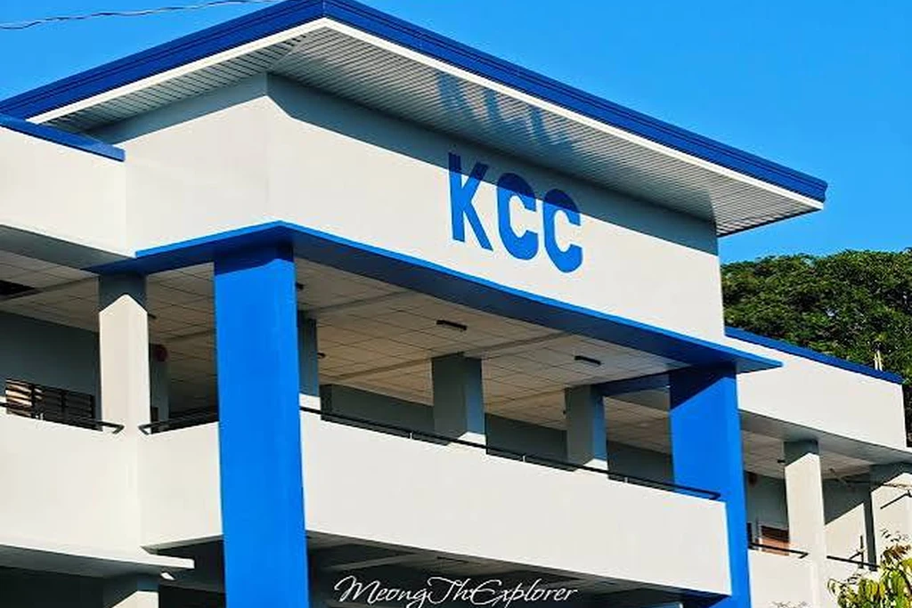

Academic Excellence
Encouraging critical thinking, curiosity, and a genuine love for learning.
A Christ-centered learning community committed to academic excellence, faith formation, and service.

Since 1927, Kabankalan Catholic College, Inc. has been part of the educational community of Kabankalan City, Negros Occidental.
Guided by Catholic identity, KCC seeks to nurture learners who value knowledge, live with character, and use their gifts in service of others.
“Teach Ye All Nations” Matthew 28:19Visit the official KCC website
The values at the heart of the KCC learning experience.
Encouraging critical thinking, curiosity, and a genuine love for learning.
Deepening faith through Catholic tradition, prayer, and Gospel values.
Putting faith into action through compassion and meaningful service.
Forming capable, responsible, and values-driven members of society.
KCC serves learners through its school and college community. For current grade levels, degree programs, admission requirements, and schedules, please contact the College directly.
A foundation for lifelong learning, character, and confidence.
Ask about enrollmentLearning experiences that prepare students for the next stage.
Ask about enrollmentBuilding knowledge, competence, and a sense of responsibility.
Inquire about programsProgram names and availability may change. Contact KCC for the latest official list.
Learning, friendship, faith, and milestones shared as one community.
Recognizing the hard work, growth, and achievements of KCC learners.

Activities that encourage discipline, teamwork, leadership, and service.
Be part of a community where faith and learning grow together.
Connect with KCCKCC commits to provide quality and inclusive Catholic education, rooted in the Gospel and driven by innovative research and meaningful community engagements, empowering its members to become effective agents of societal transformation.
OUR MISSIONFor enrollment inquiries, academic programs, and other concerns, please get in touch with Kabankalan Catholic College, Inc.
Official WebsiteGuanzon St., Brgy. 1, Kabankalan City,
Negros Occidental 6111, Philippines
8:00 AM–12:00 NN
1:00 PM–5:00 PM